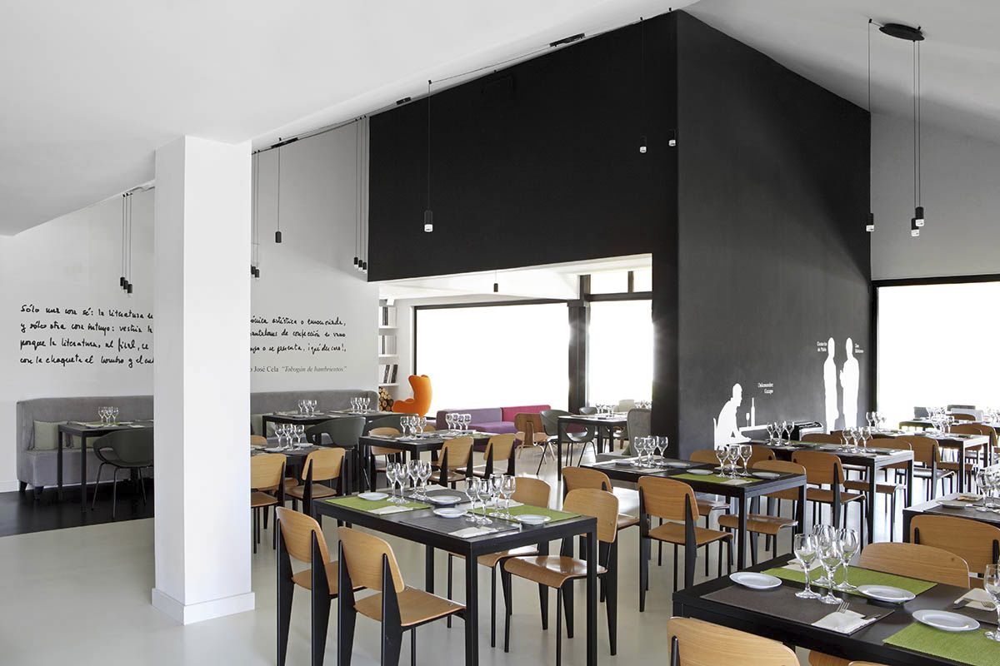
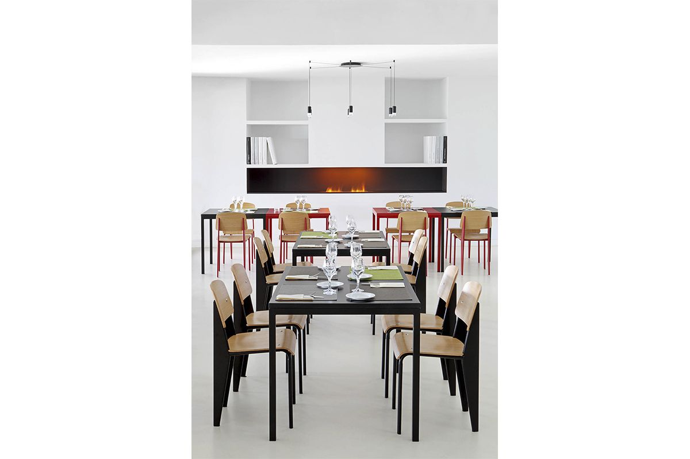

|
2015 |
Restaurante el TobogánEste restaurante forma parte del club social del Colegio SEK y la Universidad Camilo José Cela en Villafranca del Castillo. Camilo José Cela, está presente no sólo a través de alusiones espaciales y arquitectónicas, sino también con su personalidad de hombre ilustrado, sus valores y los personajes clave del texto Pabellón de Reposo que hemos utilizado como guía. El uso sobrio y masculino de los colores (dualidad blanco y negro) y de materiales como la madera y el acero, nos hablan continuamente y nos hacen revivir los espacios literarios de su “Pabellón”. El espacio asimétrico y agudo subraya la personalidad cortante del escritor, que en su vida amaba tomar decisiones pero nunca compromisos. El comedor desnudo, elegante y sobrio, vacío de cualquier decoración superflua convierte a los comensales en personajes que interactúan con la obra misma en un espacio teatral. Alusiones a muebles de grandes arquitectos, crean un espacio contemporáneo y atemporal, que permanecerá enlazado por siempre a la enseñanza que se respira por todas sus esquinas. A veces ángel, a veces demonio… Unas veces hombre, otras casi un Dios… Podemos oír su voz rota y mandataria…. Recordar su cara y sus gafas, su mirada, a veces arrogante, a veces entrañable… Imaginar su mano en movimiento mientras vibra su pena y crea palabras, escribe, corrige, borra y compone aquellas frases que pasarán a la historia… |

 |